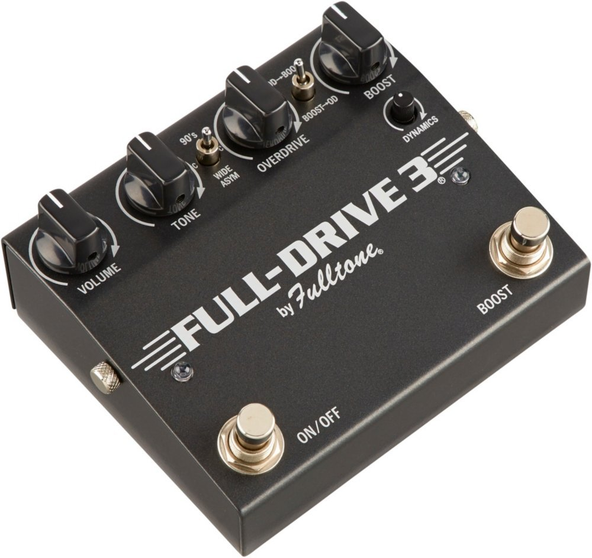

|  |
Fulltone Fulldrive 3 FD3 uses both a JFET input and a JFET op-amp, giving it the most tube-like sound you can get out of a tubeless pedal. Along with great sound, these JFET’s give the FD3 an ultra-high Input impedance which allows the pedal to mate with any type/gain of pickup and react well to changes in your guitar’s volume control. |